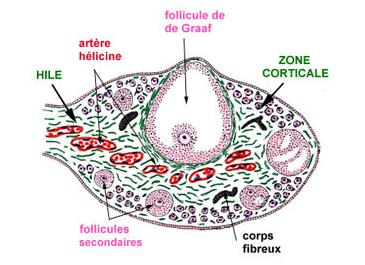
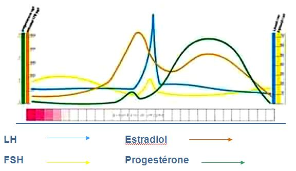
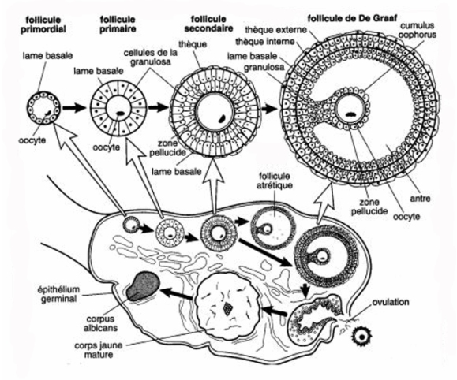

L'appareil genital feminin
Les organes genitaux externes
L'ensemble des organes genitaux externes chez la femme est la vulve.
La vulve
La vulve est occupee e sa partie moyenne par une cavite, mediane, au fond de laquelle s'ouvrent l'uretre et le vagin. Cette cavite est appelee vestibule.
Le vestibule est limite de chaque cete par deux replis cutaneo-muqueux juxtaposes, la grande levre en dehors et la petite levre en dedans.
Les grandes levres se reunissent au niveau de la partie inferieure e la commissure posterieur et au niveau de la partie superieur pour former le mont de venus.
Les petites levres se reunissent en leur partie inferieure e la fourchette et au niveau superieur, elles viennent recouvrir le clitoris pour former le capuchon du clitoris.
Les corps erectile de la vulve
Le clitoris
Le clitoris est compose de corps caverneux dont la disposition est semblable e celle des corps caverneux masculin. Comme le penis, le clitoris se termine par un gland.
Les bulbes vestibulaires
Les bulbes vestibulaires sont situes de part et d'autre du vagin et sous le repli cutane que forme les petites levres.
Les glandes annexes
Les glandes de Bartholin
Les glandes de Bartholin se trouvent de part et d'autre du vestibule, derriere les bulbes vestibulaires. Le canal excreteur s'ouvre au niveau de l'orifice vaginal. Ces glandes deversent des secretions pour faciliter les rapports sexuels.
Les glandes de Skene
Les glandes de Skene sont de petites glandes dont le canal excreteur s'ouvre au niveau du meat uretral. Comme les glandes de Bartholin, leur secretion favorise la lubrification.
Rele physiologique de la vulve
Le vagin
Le vagin est un conduit fibro-musculaire qui s'etend de la vulve jusqu'au col uterin. (8 cm de long et 3 cm de large).
Le vagin est situe entre le rectum en arriere, la vessie et l'uretre en avant.
Dans sa partie inferieure, le vagin est partiellement obstrue par l'hymen chez la fille vierge.
Dans sa partie superieure, le vagin vient forme une sorte de cupule autour du col de l'uterus.
L'uterus
L'uterus est un muscle creux e paroi epaisse qui tient en place grece e des ligaments.
L'uterus est situe dans le petit bassin, sur la ligne mediane entre la vessie en avant et le rectum en arriere.
C'est l'organe destine e contenir l'œuf feconde pendant son evolution et e l'expulser quand il est arrive e son complet developpement.
Les differentes parties de l'uterus
On distingue e l'uterus 3 parties :
La composition de l'uterus
L'uterus est constitue par une couche de fibres musculaires lisses extremement epaisse : c'est le muscle uterin ou myometre.
Ce muscle est tapisse exterieurement par le peritoine et interieurement par une muqueuse, l'endometre.
L'endometre subit des modifications au cours du cycle menstruel : l'elimination de la couche superficielle de l'endometre et de la dentelle uterine forme les regles.
Au niveau du col, l'endometre contient des grandes endocervicales qui sont responsables de la secretions des glaires cervicales : glaire translucide et filante qui permet ou non le passage des spermatozoedes.
Les trompes uterines
Les trompes uterines ou trompes de Fallope sont deux conduits caverneux creux qui s'etendent des angles lateraux de l'uterus e la surface des ovaires.
Les differentes parties des trompes
Les trompes comprennent 4 parties anatomiques :
Les ovaires
Les ovaires sont des gonades qui donnent les gametes de la femme, les ovocytes.
Elles sont situees dans le petit bassin, contre sa paroi laterale, de part et d'autre et e distance de l'uterus.
La structure histologique de l'ovaire
Physiologie de l'ovaire
L'ovaire est une glande mixte :
Le perinee
Le perinee est l'ensemble des muscles et d'aponevroses (ce qui recouvrent les muscles) qui maintien les organes du petit bassin.
Le perinee peut se composer de deux parties :
Le cycle menstruel est l'ensemble des modifications de l'appareil genital feminin, du 1er jour des regles jusqu'au 1er jour des regles e venir. Le cycle menstruel dure 28 jours, les regles de 3 e 6 jours.
Les hormones ovariennes
Il existe essentiellement deux hormones ovariennes :
Les œstrogenes
Les œstrogenes en phase folliculaire sont fabriques par la granulosa des follicules en croissance.
Ils preparent l'organisme e une eventuelle fecondation et implantation d'un œuf. Ils agissent sur les canaux galactophores, la croissance de la muqueuse de l'endometre, l'augmentation de la secretion de la glaire cervicale et l'augmentation de l'activite des cils des trompes de Fallope.
Le cycle menstruel est l'ensemble des modifications de l'appareil genital feminin, du 1er jour des regles jusqu'au 1er jour des regles e venir. Le cycle menstruel dure 28 jours, les regles de 3 e 6 jours.
La progesterone
La progesterone en phase luteale est fabriquee par le corps jaune. Sa secretion maximale se fait 7 jours apres l'ovulation.
Elle agit sur l'epaississement de l'endometre avec proliferation des vaisseaux et multiplication des arteres, l'epaississement de la glaire cervicale pour empecher la remontee des autres spermatozoedes, l'inhibition de la contractilite du myometre et favorise l'augmentation de la temperature.
Les connexions hypothalamo-hypophysaire de l'ovaire
L'hypothalamus secrete de faeon pulsatile et episodique (toute l'heure) une hormone, la GnRH.
La GnRH agit sur l'hypothalamus pour stimuler la secretion des hormones hypophysaires : LH et FSH.
Une stimulation hypophysaire par les hormones, provoque une secretion ovarienne qui agit sur la muqueuse.

Le cycle hormonal de l'ovaire

Phase folliculaire
Phase ovulatoire
Phase luteale
Fin du cycle
La progesterone en phase luteale est fabriquee par le corps jaune. Sa secretion maximale se fait 7 jours apres l'ovulation.
Elle agit sur l'epaississement de l'endometre avec proliferation des vaisseaux et multiplication des arteres, l'epaississement de la glaire cervicale pour empecher la remontee des autres spermatozoedes, l'inhibition de la contractilite du myometre et favorise l'augmentation de la temperature.

Voir aussi :
|
Accueil
| Sciences infirmieres |
Soins et techniques
|
Pharmacologie et Therapeutiques
|
Examens
biologiques |
Examens medicaux
| Version imprimable e Samir ISP tous droits reserves design : xgraphik.com modifie par M. Pitte |
 haut
de page
haut
de page